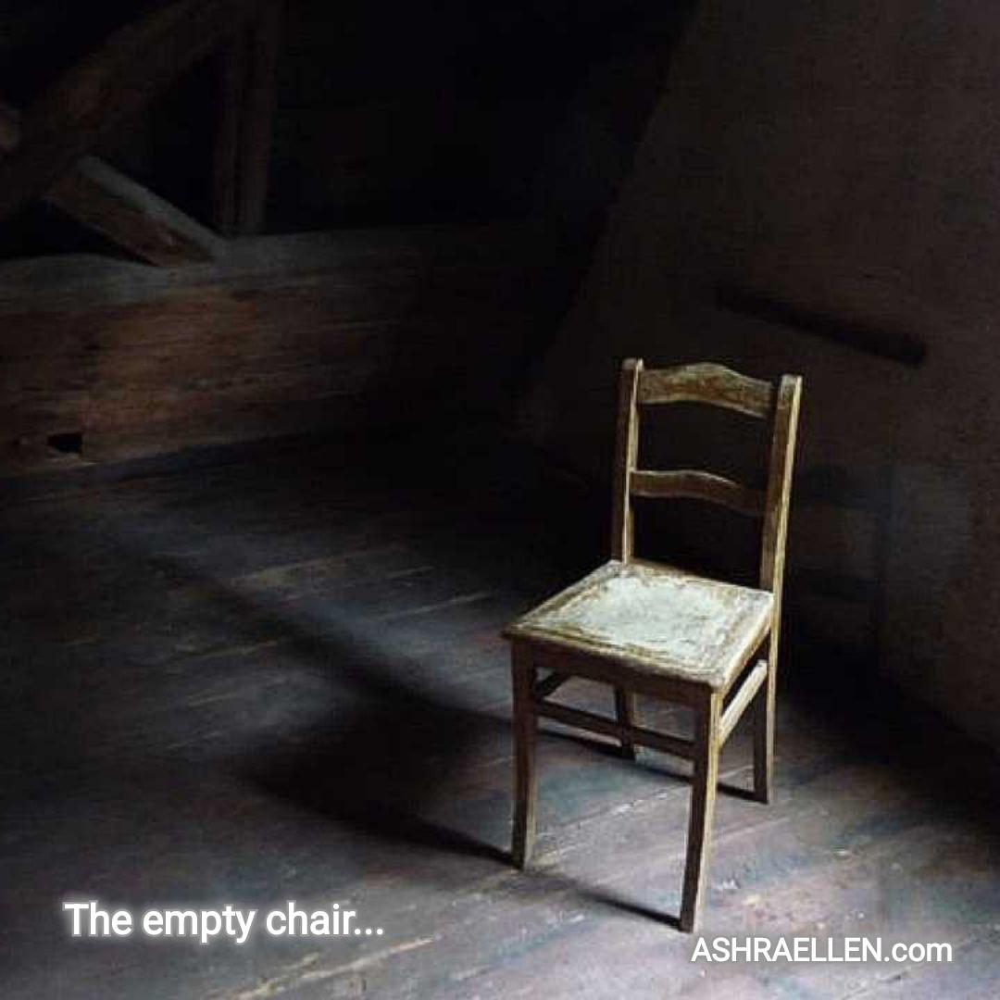

Tukiajatus 0007
Tyhjä tuoli

Jotkut ihmiset eivät lähde kokonaan. He vain lakkaavat istumasta vieressämme.
Merkitys
Tämä ei ole kehotus takertua menneeseen. Se on havainto muistista: ihmisen voi päästää irti, antaa anteeksi ja lakata odottamasta, mutta hänen kerran täyttämänsä paikka ei katoa käskystä.
Koko teksti
Sitä, jonka kerran päästit sieluusi, et noin vain aja pois.
Vaikka kaikki olisi päättynyt.
Vaikka keskustelut olisivat vaienneet.
Vaikka hän olisi jo kauan sitten lähtenyt omalle tielleen.
Sisällesi jää silti paikka, jossa hän joskus istui.
Tyhjä tuoli.
Kukaan ei enää istu siinä kokonaan.
Voit jatkaa elämääsi.
Nauraa.
Tehdä työtä.
Rakentaa uusia suunnitelmia.
Kohdata muita ihmisiä.
Mutta joskus katseesi osuu sattumalta sisimpääsi —
ja näet tuon tuolin.
Ei kipuna.
Ei aina edes kaipauksena.
Pikemminkin hiljaisena todistuksena siitä, että joku oli todella tärkeä.
Sielu ei ole hotelli.
Sieltä ei voi vain häätää ihmistä, jos hänestä on kerran tullut osa sisäistä maailmaasi.
Voit päästää irti.
Voit antaa anteeksi.
Voit lakata odottamasta.
Mutta tyhjä tuoli jää silti.
Ei siksi, että kärsisit.
Vaan jotta muistaisit: jotkut ihmiset eivät lähde kokonaan.
He vain lakkaavat istumasta vieressäsi...
Miksi tämä valittiin
Ajatus piirtää tarkan rajan takertumisen ja muistin väliin. Poissaolevaa ei tarvitse palauttaa, jotta hänen merkityksensä voisi säilyä.
Tutkimushuomio
Tyhjä tuoli on läsnäolon ja poissaolon yhteinen kuva. Se tekee muistista konkreettisen ilman, että muistosta rakennetaan draamaa.
 — mark of presence
— mark of presence